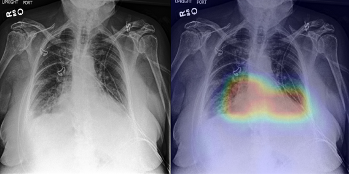
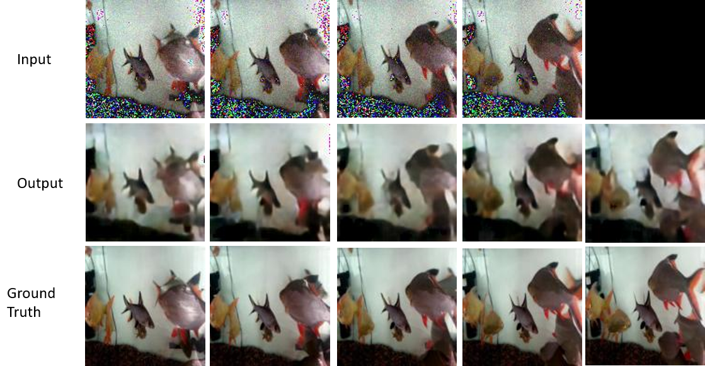
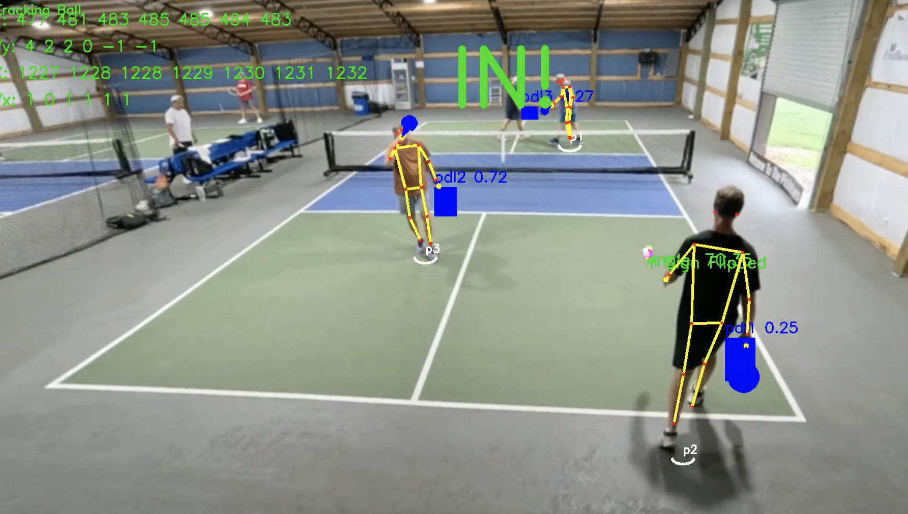

Saumya Bhandari
A Fractal Philosopher of my Thoughts
Machine Learning & Computer Vision Specialist
Navigating the recursive geometries of intelligence, code, and consciousness. Architecting cutting-edge machine learning, computer vision, and agentic systems, while mapping the self-similar patterns of thoughts, neural architectures, and human existence.
Who am I?
I am an AI engineer, researcher, and thinker who views technology as applied philosophy.
I have a lifelong passion for Computer Science, Mathematics, Politics, and Philosophy. I spend my days building intelligent agentic systems and 3D computer vision algorithms, and my nights pondering recursive epistemology and the fractal structures underlying human mindsets.
Beyond the terminal, I am a competitive bodybuilder competing in national championships from time to time. I believe physical exertion and mental discipline are self-similar reflections of the same drive: sculpting reality under progressive tension.
I love riding my motorcycle across the majestic, winding Himalayan terrains of Nepal, writing poetry and philosophical essays, discussing cinema, and connecting with people through heartfelt conversations and public speaking.
The Non-Linear Spiral of My Life
Linearity is an illusion. Time, thought, and love do not travel in straight lines — they weave through recursive curves, harmonic undulations, and golden spirals.
Born
Kathmandu, Nepal
Genesis of the journey. Early fascination with mathematics, nature's geometries, and cosmos mechanics.
Completed SLC
Secondary School
Graduated secondary school with distinction, cementing rigorous scientific and analytical foundations.
High School Graduation
Science & Mathematics
Graduated high school focused on Mathematics, Physics, and Computing. Commenced self-taught deep dives into algorithms and neural representations.
B.Sc. (Hons) Computer Science
Herald College Kathmandu
Graduated with First-Class Honours. Student Academic Representative (StAR) for 2 years (2019–2021). Hult Prize 2021 On-Campus Winner. Founded and led 3 student-run tech communities.


Machine Learning Researcher
Wiseyak Inc.
Joined in Feb 2022 as Machine Learning Researcher. Delivered chest X-ray multi-label classifier (AUROC >0.91) on highly imbalanced data with Grad-CAM explainability in radiologist cockpit. Designed TransCNN video hybrid for temporal denoising and built plant disease DANN using Meta SAM.
Machine Learning Engineer
Naamche (ReAlpha)
Fine-tuned SegFormer for semantic room segmentation; deployed diffusion-based inpainting boosting buyer engagement 86% on SageMaker serverless endpoints. Collaborated on "Claire" virtual real-estate RAG advisor.
Medical Recovery & Rehabilitation
Kathmandu, Nepal
Planned medical leave for personal health recovery and rehabilitation. A pivotal period of deep philosophical contemplation, intense bodybuilding training, and mathematical study before returning to engineering.

AI Engineer II
Accuwiz Tech
Delivered core generative vision engine across 11 renovation modalities for PadStyler.com with depth-aware mask algebra. Engineered Ordaana real-time voice-to-voice AI receptionist (400–800ms latency) via xAI Grok Voice & WebSockets.
Married to Trishna Saumya KC
Eternal Companion & Soulmate
On the 25th of February 2025, I married the love of my life, Trishna Saumya KC. A sacred, non-linear convergence where two independent recursive paths folded into a unified fractal reality. My anchor, endless muse, and lifelong partner across every dimension of existence.
Consulting AI Engineer
InstaComply (Legal-Tech)
Architected SelfCompl.ai — a modular multi-agent RAG compliance engine for GDPR, ISO-27001, and SOC2. Built compliance-as-code gateway, HITL feedback, and published 5+ AI governance research articles.
AI Engineer III
Accuwiz Tech
Architected Signal Healthcare Ecosystem (SignalDX Neo4j GraphRAG with 10k+ CMS rules & MedicareAgent over live MCP; SignalDoc vision LLM zero-disk classifier; SignalMD 100+ biomarkers). Built Lightology perspective homography & Cabinet Design 2D blueprints.

AI & Computer Vision Advisor
PointRef Inc. (Sports-Tech)
Advising Mosalam Ebrahimi (ex-Meta Reality Labs). Formulated 2D-to-3D solvePnPRansac camera calibration for metric 20x44 ft courts, planar homography, parabolic bounce detection, and Core ML iOS edge inference.
AI Engineer at Giles
Giles (United Kingdom / Remote)
Currently working at Giles. Architecting asynchronous LLM queue middleware decoupling Google ADK agents from Vertex AI via Cloud Tasks. Engineering hierarchical multi-agent trees, declarative MCP tool servers across European HTA bodies, and resilient Qdrant ETL pipelines.
A Fractal Philosopher of my Thoughts
Thoughts are not linear vectors; they are recursive, self-similar geometries. Just as a Mandelbrot set reveals infinite depth under every magnification, human inquiry, neural representations, and life's trajectory fold continuously into one another.
Self-Similarity in Neural Cognition
Deep neural networks are inherently fractal. Spatial convolutions mirror token self-attention, and hierarchical latent embeddings mirror the conceptual meta-layers of human consciousness. How an artificial neuron weighs evidence reflects how human intuitions crystallize.
Discipline of Iron & Intellect
Competitive bodybuilding and deep learning research share an identical fractal law: micro-repetitions under focused tension yield macro-scale transformations. Physical hypertrophy and weight optimization both demand relentless, iterative consistency under load.
Determinism Meets Emergence
From calculating exact perspective homographies in computer vision to orchestrating stochastic agentic trees in Giles, engineering sits on the edge between deterministic mathematics and emergent consciousness. Computation is the scaffold; thought is the emergent spark.
The Topology of Growth
Looking back through foundational milestones, university honors, deep technical research breakthroughs, personal recovery, and current agentic engineering — life is an iterative branching tree. Every past milestone carries the seed of the next iteration.
"The mind is not a vessel to be filled, but a recursive pattern that contemplates its own recursion. In designing AI, we are not merely tuning loss functions — we are constructing mirrors for the fractal nature of thought itself."
Selected Continuous Self-Learning
Continuous exploration of deep theoretical foundations from premier institutions.
- CS231N: Convolutional Neural Networks for Visual Recognition
- CS224N: Natural Language Processing with Deep Learning
- 6.034: Artificial Intelligence
- 18.06: Linear Algebra (Gilbert Strang)
- 9.13: The Human Brain & Cognitive Architecture
- 8.04: Quantum Physics I • Deep Learning Bootcamp
- Stat110: Probability & Stochastic Processes (Harvard)
- CS480 / CS680: Introduction & Advanced Deep Learning (Waterloo)
Life's Work & Engineering Systems
A showcase of production AI systems, computer vision algorithms, and autonomous multi-agent frameworks built throughout my career.
AI Engineer at Giles
Giles.app • United Kingdom / Remote
Architected asynchronous LLM Queue middleware decoupling Google ADK agents from Vertex AI (Gemini 2.5/3.5) via Google Cloud Tasks (4 dispatches/sec, DLQ sweeper). Built hierarchical multi-agent trees with turn-scoped contexts, declarative MCP tool servers across European HTA bodies (IQWiG, G-BA, HAS, NICE), and a cluster-global permit scheduler in Qdrant.
AI Pickleball Officiant @ PointRef Inc.
PointRef Inc. • AI Sports-Tech (Advising Mosalam Ebrahimi, ex-Meta Reality Labs)
Formulated monocular 2D-to-3D solvePnPRansac camera calibration and planar homography for metric 20x44 ft court registration. Designed parabolic bounce detection, paddle-contact rejection, and converted models to Core ML for sub-150ms real-time inference on native iOS devices.
Virtual Staging Platform @ PadStyler
Accuwiz Tech • PadStyler.com
Delivered the core generative vision engine across 11 renovation modalities (virtual staging, wall/floor refurnishing, remodels). Combined fine-tuned SegFormer, YOLOv11, and MiDaS depth with boolean mask algebra to strictly lock structural room boundaries. Productionized on AWS FastAPI with Redis session management.
Leading AI Architecture @ SelfCompl.ai
InstaComply • SelfCompl.ai
Architected SelfCompl.ai — a modular multi-agent RAG system powering GDPR, ISO-27001, and SOC2 audits. Reduced audit cycles from 6 months to 20 days with real-time compliance gateways, human-in-the-loop audit trails, and multi-LLM orchestration (Claude, GPT-4o, Gemini). Authored 5+ governance research papers.
Medical Diagnosis & Video TransCNN @ Wiseyak
Wiseyak Inc. • Medical AI & Research
Joined in February 2022 as Machine Learning Researcher. Engineered chest X-ray report generator (AUROC >0.91) across 10 diseases with Grad-CAM explainability and CLIP embeddings. Designed custom CNN-Transformer hybrid (TransCNN) for medical video denoising & next-frame prediction. Built plant disease DANN via Meta SAM.
Signal Healthcare Ecosystem & Spatial CV
Accuwiz Tech • SignalDX.ai, Lightology & Cabinet Design
Architected clinical lab intelligence: SignalDX Neo4j GraphRAG indexing 10,000+ CMS coverage rules with autonomous MedicareAgent over live MCP; SignalDoc stateless Vision LLM classifying 22 document types with 100% in-memory zero-disk multipart buffering; and Cabinet Design CV engine unwarping kitchen photos into 2D orthogonal blueprints.
Get In Touch
Whether discussing frontier multi-agent architectures, computer vision research, philosophical queries, or ambitious collaborations — my door is always open.
saumyabhandary22@gmail.com
linkedin.com/in/saumyabhandari
GitHub
github.com/saumya-bhandari
Location
Kathmandu, Nepal / Remote